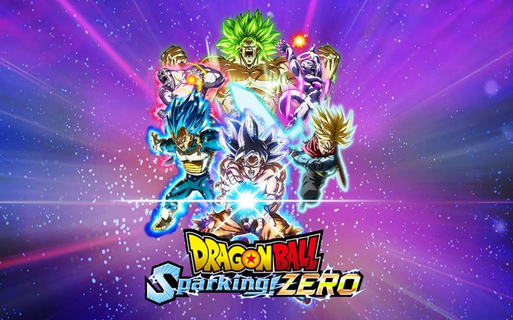
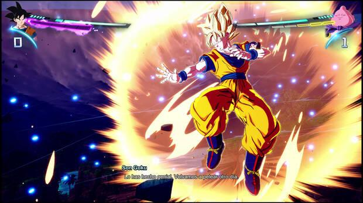
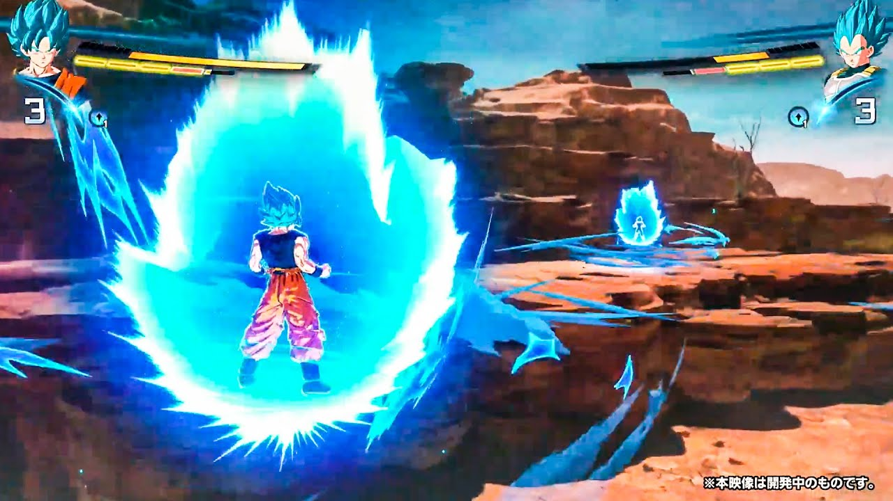
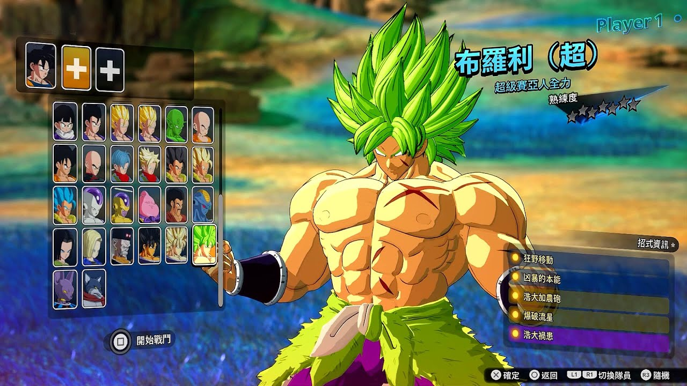
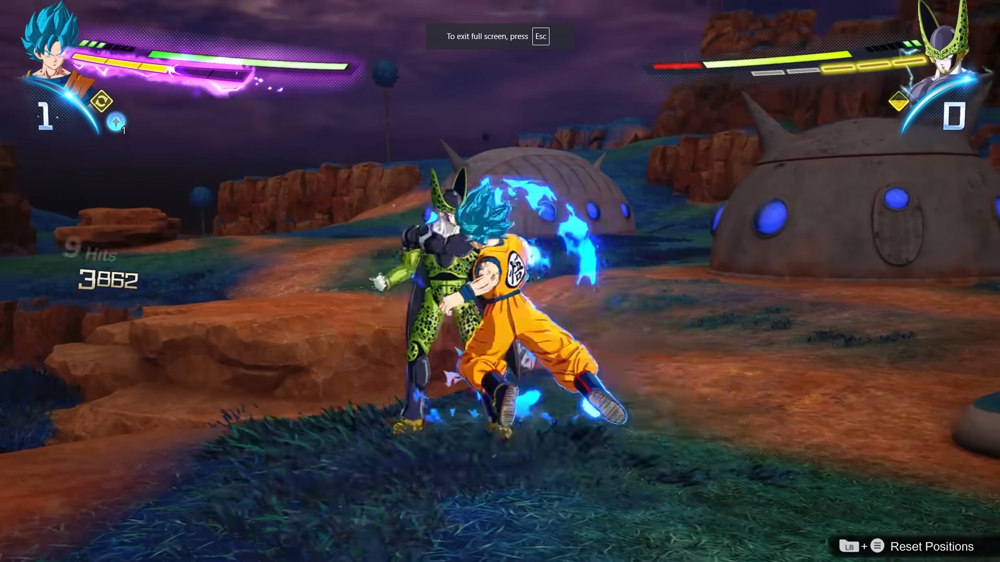
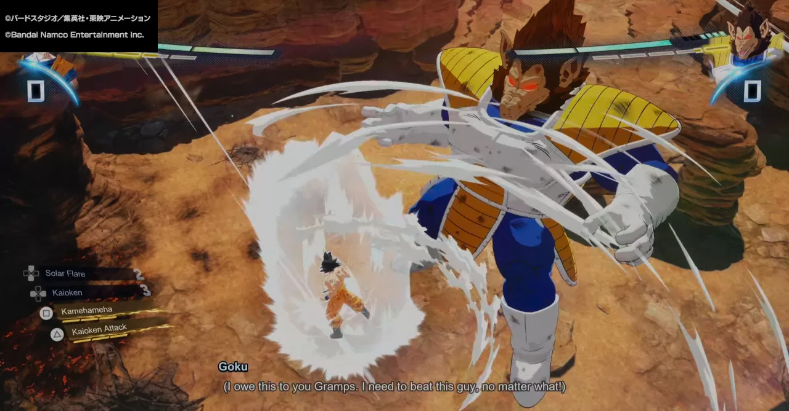
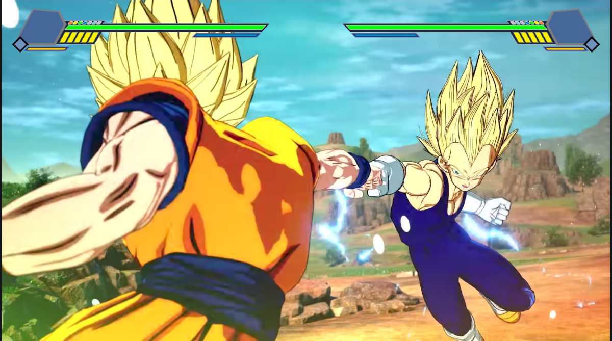

Análisis Dragon Ball: Sparking! Zero, el Budokai Tenkaichi 4 que merecíamos (PS5, Xbox Series X/S, PC)
Tras 17 años de espera, la saga Budokai Tenkaichi regresa con una nueva entrega que nos deleita con el simulador de combates de Dragon Ball más espectacular, completo y frenético que se ha hecho nunca.

Análisis de versiones PS5, Xbox Series X/S y PC.
Dragon Ball Z: Budokai Tenkaichi 3 es toda una leyenda entre los aficionados de la inigualable obra de Akira Toriyama. No en vano, estamos hablando de un juego lanzado hace 17 años para PS2 y Wii que nos ofreció el que hasta ahora considerábamos como el simulador definitivo de Dragon Ball gracias a una cantidad de contenidos y personajes abrumadora y una jugabilidad que recreaba a la perfección el estilo y el espectáculo de los combates de la serie.
Inexplicablemente, en todo este tiempo Bandai Namco se ha negado a darle la continuidad que merecía con una cuarta entrega y no ha sido hasta hace unos pocos años que los juegos de Dragon Ball han vuelto a recuperar su estado de forma con títulos como Dragon Ball FighterZ, Kakarot o Xenoverse 2. Pero incluso así, seguíamos sin un digno heredero de Budokai Tenkaichi.
Por suerte, esa larga espera ha terminado y ya tenemos entre manos Dragon Ball: Sparking! Zero, un título que pese al cambio de nombre en Occidente para mantener el original japonés de la saga, es ese Budokai Tenkaichi 4 que tanto ansiabamos y merecíamos. Pero ¿está a la altura? Solo tenéis que seguir leyendo para descubrirlo, pero ya os vamos adelantando que sí.
Los combates más vertiginosos, fieles y espectaculares
Al igual que sus predecesores, Dragon Ball: Sparking! Zero es un juego de lucha 3D que se caracteriza por permitirnos batallar en unos escenarios de un tamaño gigantesco por los que podemos volar con total libertad, ya sea para huir de nuestro rival, usar el entorno para escondernos o mandar al enemigo volando cientos de metros con nuestros golpes mientras lo perseguimos para continuar la ofensiva. Todo ello mientras realizamos diversos combos cuerpo a cuerpo con un sistema de dos botones, nos transformamos durante los enfrentamientos, cargamos Ki, lanzamos todo tipo de técnicas especiales, esquivamos y ejecutamos contraataques y bloqueos.

Uno de los aspectos más atractivos es su masivo roster de personajes. Con 182 luchadores, abarca personajes y transformaciones de Dragon Ball Z, Dragon Ball Super, y hasta personajes de la poco apreciada secuela GT. Esto incluye versiones alternativas y raramente vistas de héroes y villanos, como Turles y Gohan Black en su propia línea temporal “What if?”. Estas variaciones ofrecen a los jugadores la posibilidad de experimentar eventos alternativos en la historia original de manera creativa y entretenida
Como podréis intuir, esto no es un juego de lucha técnico o profundo que requiera de una gran habilidad o precisión para encadenar golpes y crear combos, sino que aquí lo realmente importante es saber movernos y gestionar correctamente nuestros recursos para planificar una buena estrategia que nos permita alzarnos con la victoria. Controlar bien nuestra barra de Ki (necesaria para lanzar andanadas de Ki y técnicas especiales, esquivar golpes y volar rápido) y nuestro medidor de habilidad (con el que podemos entrar en el modo Sparking para potenciarnos temporalmente y usar nuestra técnica definitiva, así como transformarnos, fusionarnos y activar habilidades con efectos muy diversos) es fundamental para ganar, motivo por el que los propios escenarios tienen mucho protagonismo, ya que podemos usarlos, por ejemplo, para escondernos y recargar con seguridad, o incluso para despistar a nuestro rival y pillarlo desprevenido con un ataque sorpresa desde una dirección que no se espera.
Gameplay





A nivel de combos, todos los personajes son muy similares, aunque hay diferencias obvias en la velocidad a la que se mueven y golpean y la forma en la que pueden encadenar ciertos movimientos, pequeños aspectos que tenemos que tener en cuenta. Como hemos dicho, con tan solo dos botones podemos realizar combinaciones muy diversas, pudiendo cargar nuestros golpes para romper la defensa del contrincante apuntando a tres niveles de altura diferente para mandarlo volando y continuar nuestra ofensiva con diferentes persecuciones.
Conclusiones
Dragon Ball: Sparking! Zero es exactamente lo que llevábamos tantos años esperando: un juego de lucha divertidísimo, accesible, frenético, espectacular, inmersivo, abrumadoramente completo y con un plantel de ensueño que recrea a la perfección los combates de la inmortal obra de Akira Toriyama. Es ese digno sucesor de Budokai Tenkaichi 3 que tanto se ha hecho de rogar y el resultado no podría habernos hecho más felices.
Sí, su multijugador local es un poco decepcionante y a su vertiente online le faltan algunas características que a día de hoy nos parecen básicas en un título de este género, pero es un juego que nos va a tener lanzando un Kame Hame Ha tras otro durante meses. Novedades como su editor de combates son una genialidad, las nuevas mecánicas hacen que los enfrentamientos tengan más sustancia que antes, los personajes y las interacciones entre ellos tienen mucho mimo detrás y, en general, es una producción que va a hacer las delicias de cualquier fan de Dragon Ball. Gracias, Shenron, Bandai Namco y Spike Chunsoft, por concedernos nuestro ansiado deseo.